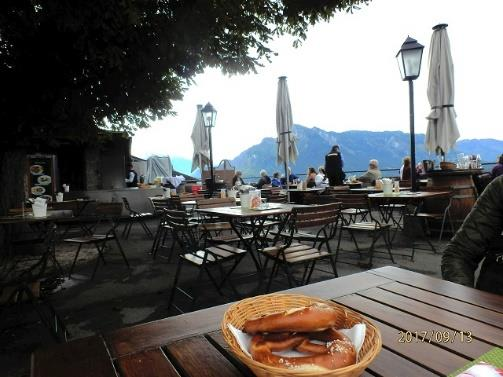

| & ( ) nodrm | |
| Unknown | |
アクティブシニアのための 海外個人旅行 副読本
10
のステップ で 満足度アップ!
「旅」マネジメント
ウィーン & ザルツブルク紀行
ササガワ ヨシヒロ
はじめに
第 1 章 総論
1. 出発点とゴール
2. なぜ、旅はプロジェクトなのか
3. なぜ、マネジメントが必要か
4. 「旅 マネジメント」
" 10 のステップ "
第 2 章 各論
*: ウィーン & ザルツブルク 4 泊 7 日の事例 :*
フェーズ 1 : 構想
1. < ステップ 1 > 目標を明確にする
(1) 旅のはじめ
(2) 家族各々の都合を情報共有
(3) 旅のテーマ設定 (それぞれの期待)
Die Kaffeepause . . .MAYER
1. < ステップ 2 > 旅程イメージを、一つ
ひとつの「タスク」に分解する
(1) 役割分担
(2) タスクのリスト化
(3) 各自が思い描いたタスク群
Die Kaffeepause . . .NORDSEE
2. < ステップ 3 > 各タスクについて、選択肢
を洗いだす
(1) 飛行機とホテルは現地旅程詳細設計の
"キモ"
(2) 東京 ⇔ ウィーン 所要時間
/ 到着・出発時間帯
(3) 飛行機とホテルの予約
(一つの事例として)
(4) 1 つのホテルに連泊する
Die Kaffeepause . . . エレベータで
3. < ステップ 4 > 各タスクの所要時間を
見積もる
(2) ノムラ・スコープ (9 分割)でマップを
頭に入れる
(3) 地下鉄とトラムで分単位の予定を組む
Die Kaffeepause . . . Schottentor 駅
4. < ステップ 5 > 各タスクの予算を見積もる
(1) みやげはスーパーで買う
Die Kaffeepause . . .Julius Meinl
5. < ステップ 6・7 > 負荷(時間・予算)を
調整する ／ 日々のスケジュールに落とし込む
(1) 「日の出・日の入り時刻」と「天気予報」
(2) トラム(路面電車)を使いこなす
(3) フリーチケット付きホテルは かなりお得
(4) レストランを予約する
(5) スケジュール表作成を楽しむ
Die Kaffeepause . . .ラデツキー行進曲
(1) 長距離鉄道乗車券の購入リスク
(2) 受動喫煙のリスク
(3) 高低差リスク
(4) 現地到着後にレストラン予約を取り消す
(5) 留守宅の見守り
Die Kaffeepause . . .Panorama restaurant
フェーズ 3 : 実行・コントロール
1. < ステップ 9 > 進捗をコントロールする
(1)マクドナルド、意外に使えるぞ!
(2) 道を尋ねる相手は Madam (マダム)に限る
(3) 小銭(コイン)の処分はスーパーのセルフ・
レジで
(4) 美術館のショップでは折りたたみ傘を買う
Die Kaffeepause . . .マクドナルド
1. < ステップ 10 > 事後の振り返りをする
(1) 領収証から振り返る
(2) 搭乗券から振り返る
(3) とくとくきっぷ・カードから振り返る
(4) スナップ写真から振り返る
(5) 土産 (みやげ) から振り返る
Die Kaffeepause . . . Insta 映えする
ウィーン
あとがき
著者自己紹介
いらっしゃいませ。この本を手にしていただき、ありが
とうございます。
早速ですが、ズバリ伺います。. . .
・あなたは、今どのような海外旅行をされて
いますか?
・そして、それに 100% 満足していらっしゃい
ますか?
...はたして、某旅行会社の「パッケージツアー」を
ご利用でしょうか?
あるいはホテル・飛行機が限定されている「フリー・
プラン」でしょうか?
私がこれからご案内する「旅 マネジメント」は、旅行
会社各社が販売している「パッケージツアー」や「フリー
プラン」とは一線を隔した「個人旅行」について、私の体
験を踏まえ提案させていただくものです。
そろ愛想が尽きた、と感じている読者のみなさん、あなた
こそこの本のお客さまです。
いま私の手元に、国土交通省総合政策局観光事業課が平
成 20 年 7 月にリリースした『海外旅行者満足度・意識調
査報告』があります。少し古いものですが、その中でつぎ
の 2 点を、ここで お伝えしておきたいと思います。
1 点目は、. . .
「パッケージツアー」
、
「フリープラン」
、
「自由旅行」
の旅行商品タイプ別に、
「食」
、
「宿」
、
「ショッピン
グ」
、
「観光」について、旅行前の期待と旅行後の満
足度について比較した。
「パッケージツアー」では全体的に各要素の満足
度が低く、期待と満足度の落差も大きくなってい
た。
一方、「フリープラン」と「自由旅行」では、「観
くは期待以上となっていたが、
「食」と「宿」に
ついては、期待と満足度の落差は大きくなってい
た。
2 点目は、. . .
旅行への期待を世代別に見ると、年代が高くなる
とともに、学習志向・健康志向が高まっていた。
また、人気のお土産やブランド品などの購入意欲
は若者の方が高く、人気の名所・史跡・文化など
への期待は世代を問わず高くなっていた。
そうです。
これから分かることは、満足度においてパッケージツ
アーより比較優位にある自由旅行でも、
「食」
「宿」は「イ
イチ」だ、ということです。
そこで、アクティブシニアを自負する私たちは、自由
旅行 (以下、
「個人旅行」という)を出発点として、
「食」
貪欲に情報収集し、選択眼に磨きをかけ、それらを取り込
みながら自分の旅のスタイルを確立して行きたいもので
す。この過程で、旅から得られる満足度は今までとは比
べ物にならないくらい、アップするはずです。
BBT 大学を主宰する世界的経営コンサルタントとして
知られる大前研一さんは、実は最年少で難関の通訳案内
士(国家資格)に合格し、学生時代には JTB で幾多の訪日
外国人客に日本の魅力を伝えてこられたばかりでなく、
その後は コンサルタントとして文字どおり世界を股に
掛けた活躍をされてきた中で、世界各地の観光地・リゾ
ート・食・酒をご夫妻で楽しんでこられたそうです。
このように、旅に関する圧倒的な知見を有する氏の著
書 『遊ぶ奴ほどよくデキる』(小学館文庫)の中で、大
前さんは次のようなアドバイスを記しています。
「予定がない旅行は、スケジュールに追われる毎日
を過ごすサラリーマンにとって、とても刺激的だ。
小さい子供連れの場合は難しいが、そうでないな
しい。」
これは 一見、これから私が読者のみなさんにお伝えし
たい「旅をマネージメントしよう」とする考えとは、相
容れないアドバイスです。
しかしご安心あれ。なぜなら、読者となっていただく皆
さんの多くは、既に退職・退官されているか、または、不
本意ながら「窓際族」となっていて、
"スケジュールに追
われる毎日"は 遠い過去の思い出、となっているはずで
すから。
そんな著者の勘繰りが、この「副読本」の大前提とな
っていることをご容赦いただきたいと存じます。
なお、掲載した写真は Google Images からの引用を除
き、全て、二男 笹川晴央に その著作権が帰属しているこ
とを記しておきます。
第 1 章 総論
「旅は、プロジェクトであり、マネジメントの対象と
なりうる。」これが、この副読本の出発点 (前提あるいは
合意事項)です。
そして、
「旅をマネジメントすることで、従来自分比２
倍の満足を得る」ことが目標 (ゴール) です。
なお、言わずもがなですが、この「旅」とは個人旅行を
指します。
2. なぜ、旅はプロジェクトなのか
インターネットで「プロジェクトマネジメント」の定
義を検索すると、いろいろと出てきますが、ここでは 総
務省の「自治体ＣＩＯ育成研修」資料を引用させていた
だきます。
① 有期性
バカンスをしっかり取る、例えばドイツ人のように、
１か月位の時間が取れる読者諸氏もいらっしゃると
思います。
しかし、10 日前後. . 7 日から 14 日というところ
が現実ではないでしょうか。いずれにしても「有期」
であることは間違いありません。
「資源」といえば、
「人・モノ・金・情報」と反射的
に応えられるのが、永くサラリーマンをされていた読
者のみなさんです。そのとおりで、
1) 人
・１人旅か?. . .でなければ、誰と行くか?
・旅の目的地 (destination)に友人・知人はいる
か?
2) モノ
・「金 (money)」以外で. . 例えば、健康状態
・薬、サプリメント 等
・持ち物. . .身体機能を補助するメガネ・入れ
歯・補聴器 等
3) 金
・一回の旅に、いくら使うかの. . .上限額の設
定。これは生涯ライフ・デザインからの逆算が
必須。 (本当は、ここが一番重要ですが、当「副
読本」としては、ここをスキップします。)
・
「情報」には、ⅰ「そもそも公開されていない」
、
ⅱ「公開されているが、アクセスが難しい」
、
ⅲ「公開されていて容易にアクセスできる」の
３つがあります。
・ⅰの代表例は、レストランの商品別単価です。
もちろん公開している店はありますが、少数で
はないでしょうか。
・ⅱは、例えば ウィーンのトラム路線図です。
日本語で検索しても出てきません。英語または
ドイツ語で検索できます。
・ⅲは、日本語で Google あるいは Yahoo のポー
タルを利用することです。
・いずれにしても、自分にとって必要十分な情報
は 100%入手できません。
自分(達)が満足すれば それでよい、それが旅。投
資は客観的ですが、それに対するリターンの評価は極
めて「主観的」ですね。
その「成果物」は、多くの場合 他人にとっては ほ
ぼ無価値です。
そのような意味で「独自」である、と言えます。
ただし、
「投資」で得た知見は、他人のそれであっ
ても十分価値があります。だからこそ、旅行会社が存
在し、ガイドブックが存在するのでしょう。
以上、見てきたとおり「旅」はプロジェクトそのもの
です。
3. なぜ、マネジメントが必要か
(1) マネジメントとは
ドラッカーは、
「マネジメントとは、成果に対する責
任に由来する客観的な機能である」と定義していま
るか、. . .あまりピンときませんね。
そこで、トヨタ自動車に目を向けると、こう言って
います。
「マネジメントとは、ＰＤＣＡを廻すことである。」. .
こちらなら馴染みやすいのではないでしょうか。
出典 : 「トヨタの問題解決 (トヨタ NPO カレッジ 2016 年 5 月 19 日)」
(2) マネジメントすることで得られるモノ
大前研一さんは次のように言っています。
「使えるお金と時間は限られている。これからの時代を
より良く生きていくには、自分のライフスタイルをマネ
ジメントしていく発想が必要不可欠だ。」
出典 : 『ロウアーミドルの衝撃』講談社
要するに、
「金」と「時間」が得られる、ということ
です。正確には、マネジメントしない場合に比べ、
「金」
と「時間」を無駄に浪費せずに済む。これがメリットで
す。
だから、私たちシニア世代こそ、天から与えられた「健
康寿命」を最大限活かしきるために、
「旅」に臨んでも、
マネジメントの考え方を応用しようではありませんか。
4.「旅マネジメント」
" 10 のステップ "
コントロール
ザルツブルク) に旅行したので、主にこの旅行を材料と
して、私流 個人(海外) 旅行の進め方・楽しみ方 を第 2
章で具体的にお話しさせていただきます。
第 2 章 各論
ウィーン & ザルツブルク 4 泊 7 日の事例
1. < ステップ 1 > 目標を明確にする
(1) 旅のはじめ
ここで材料とするオーストリア旅行、. . .私にとっ
ては、今年計画した年４回の海外個人旅行の第３回目に
あたるものです。また、海外家族旅行としては、今年
初めて。同行する家族は、妻と 既に仕事の都合で別居
している二男 そして私の 3 名となりました。
妻 二男とも、ヨーロッパ方面の個人旅行は既に何度
も経験しています。また、昨年９月には、この同じ３人
(私・妻・二男) でロンドンに旅行した実績があります。
今回のオーストリア旅行の端緒は、この二男からの要請
で「今年も、夏休みにどこか海外に行きたい。
」という
ＬＩＮＥの つぶやき でした。ちなみに、私たち家族は、
いろいろな理由から、ＬＩＮＥ上に『家族』というトー
クの場を設定し、直接本人に関係しないことも皆で情報
共有することにしています。
さて、この二男の つぶやき を受け、旅の大枠づくり
がスタートしたのは、出発日の約５か月前でした。
(2) 家族各々の都合を情報共有
旅行先
日程
その他
二男
ヨーロッパ
最大7日
現在シフト勤務のため土・日無関係
妻
オーストリア
最大8日
9月10日(日) ～ 9月17日(日)の間
長男
業務の都合付かず
三男
業務の都合付かず
私
どこでも
いつでも
(旅行会社として、家族に献身)
この時点で「大枠」として次のことが家族間に共有さ
れました。
1. 参加者 : 妻、二男、私 (3 名)
2. 目的地 : オーストリア
3. 期間 : 9 月 10 日から 9 月 17 日の間
4. 日数 : 日本出国日と帰国日を含め、
最大 7 日間
(3) 旅のテーマ設定 (それぞれの期待)
旅行先 (国) を具体的に提案した妻には、そもそも
また、その提案に賛成した (というか、代替案を出さ
なかった) 二男と私にも、それに同意した理由があるは
ずです。
それらの理由を「見える化」するため、私は妻と二男
に < ステップ 2 > の"注文"をつけました。
=== Die Kaffeepause . . . MAYER am pfarrplatz ===
憧れの Heurige (ホイリゲ) デビュー。しかし、あいにく
の小雨。日本出発前に予約を入れておいたので、屋内テー
ブル席が用意されていました。
屋内 (左隅は筆者) 屋外
Backhendl gr. Herbstsalat
2er lei kürbis Dessert 16 WienerKlassik Mayer
----------- Schmeckt good! ----------
1. < ステップ 2 > 旅程イメージを、一つ ひとつの
「タスク」に分解する
その"注文"とは、現地での「日程」の「1 日分 また
は 2 日分」を作ってみる、ということです。
・自分はどこに行き、何をしたいのか
・そこには、どのようにして行けばよいのか
なお、具体的には、以下のとおりです。
(1) 役割分担
・各自、現地での「1 日分または 2 日分の旅程」を企
画する。なお、提案は 8 月 31 日〆切。
(2) タスクのリスト化
例えば、
「〇〇美術館を見たい」であれば、
② その美術館に係る、前後の移動時間と移動手段
．．
の、①と②のセットを 1 単位の「タスク」と緩く定義し
ました。したがって、
「1 日分の旅程」は、複数個の「タ
スク」の集合という形になります。
(入場料については別途考慮)
ただし、各日の旅程は、その日単独では決めかねるも
のです。なぜなら、少なくとも現地に到着する当日なら
びに現地を出発する日の前日は時差を意識した旅程づく
りが欠かせないからです。
結果として、8 月 31 日現在(出発日の 70 日前)のリス
ト化された「タスク」は次のとおりでした。
滞在時間
タスク
移動手段
(時間)
二男
シューンブルン宮殿で散策と写真撮影
2
地下鉄
カーレンベルク山からウィーン市街一望
2
地下鉄
ベートーベン遺書の家で哲学する
1
地下鉄
トラムでリングを一周する
1.5
地下鉄
ザルツブルク日帰り旅行
10
長距離電車
(モーツァルトの生家で天才に触れる 他)
妻
ベルヴェデーレ宮殿でクリムトを見る
2
地下鉄
ナッシュ・マルクト（市場）で食べ歩き
2
地下鉄
シュテファン寺院の周辺を散策
2
地下鉄
ｽｰﾊﾟｰ「ユリウス･マインル」
1
地下鉄
私
シュニッツェルを食べる
2
トラム
ホイリゲでワインを飲む
3
トラム
トラムを乗り廻す
∞
トラム
フンダートヴッアサーハウスを見る
2
トラム
プラター公園で観覧車に乗る
3
トラム
ウィーン楽友協会ホールに入る
2
トラム
ベートーベンの小径を歩く
3
トラム
中央墓地の大作曲家たちの墓
2
トラム
なお、妻のタスクは 1 日分、私と二男のそれは 2 日分
を想定したもの。
=== Die Kaffeepause . . . NORDSEE ===
ドイツを中心に店舗展開する魚介類専門のレストラン
チェーンです。ドイツの街では、どこにでもあります。
ですから、
「困った時には NORDSEE」なんです。ナッシュ・
マルクトにもありました。
外観
店内の様子
----------- Schmeckt good! ----------
選択肢を洗いだす
(1) 飛行機とホテルは現地旅程詳細設計の"キモ"
飛行機とホテルを決めることにより、
① 現地到着時刻、現地出発時刻が決まる。
② 現地での行動拠点が決まる。
すなわち、①から、正味現地滞在時間が、②から、
そのホテルを中心として、各目的地との絶対的な位置
関係が明確にイメージできます。
(2) 東京 ⇔ ウィーン 所要時間
/ 到着・出発時間帯
オーストリア航空が 2016 年 9 月に成田線から撤退
したので、現在 日本からウィーンへの直行便はありま
せん。(2018 年 5 月に再開予定とのプレスあり)
したがって、乗継 1 回便の中から選択することにな
凡その目安として、
所要時間 到着時間帯
<往路>
欧州系 約 14 時間半 ～ / 主に 夕刻以降
アジア系 約 17 時間 ～ / 主に 早朝
中東系 約 20 時間 ～ / 主に 昼前後
<復路>
欧州系 約 14 時間半 ～ / 主に 昼前後
アジア系 約 17 時間 ～ / 主に 午後
中東系 約 20 時間 ～ / 主に 夜
さて、ウィーン空港に夕刻到着したところで、ホテ
ルに直行し、その近隣で夕食するだけになりかねませ
ん。
このことは「ホテル代一泊分が余計にかかる」とい
うことでもあります。
今回 私たちには「ナイトライフを楽しみたい」とい
アジア系に着目。搭乗経験があるシンガポール航空、
チャイナ・エアー、大韓航空 等の就航曜日、機材、
料金、トランジット時間およびラウンジを比較勘案し、
結果 チャイナ・エアー (台北経由・ビジネス)を選択
しました。
(3) 飛行機とホテルの予約 (一つの事例として)
ご承知のとおりこれらのサービスは、安く買おうと
すればするほど、
・ 何十日も前に、
・ 「キャンセル不可」の条件で、
・ 他の客より早く(売り切れないうちに)
購入を促すプレッシャーが働くので、これらの購入の
タイミングは旅行手配の中でも多くのリスクを孕んで
いる、という意味で最重要のタスクです。
その主なリスクとして、
・全旅行費用に占める「飛行機代」+「ホテル代」
そ 8～9 割を占めること
・はたして、その旅行日に、自分自身が健康状態
であるか、の不安がつきまとうこと
今回私たちは、結果としてこれを 5 月 1 日(日)、約
19 週間前に実施しています。
予約内容は、次のとおり。
日本出発日 : 9 月 9 日 (土)
日本帰国日 : 9 月 15 日 (金)
航空会社 : チャイナエアー (台北経由)
/ ビジネス
ホテル : インター・シティー・ホテル
・ウィーン
旅行会社 : エクスペディア
上記旅程に決定するまでの手順は、
① 参加者(妻、二男)の日程の擦り合わせ
③ ホテル・飛行機について直接購入か、旅行会
社経由にするかの選択
の３つのタスクをほぼ同時に進めました。言ってみ
れば「マルチタスク方式」の詳細計画づくり、です。
参加者の日程擦り合わせでは、『出発日について、
9 月 9 日(土)も候補日とする。
』 ことで飛行機の選
択肢が増え、ホテルの宿泊料も軽減の方向に働く、
との理由を示して、妻の了解を得ました。
また、ウィーンの宿泊料は相対的に高めであるこ
とから、twin room 1 室 + single room 1 室ではな
く、3 人部屋(3 bed room)を狙いました。
通常、妻は洗面等の使い勝手を考慮し、single
room を利用しますが、今回は予算面から３人部屋で
妥協せざるをえませんでした。
飛行機については、繰り返しになりますが、オー
ストリア航空の撤退により、日本(成田)からオース
の経由便の組み合わせの中から選択することとなり
ます。
その際の判断基準は、
① 7 日間 (4 泊 7 日)という"強行軍"で、しか
も二男は帰国の翌日から仕事に復帰する必要
があるため可能あればプレミアムエコノミー
またはビジネスを利用したい。
② ウィーンに現地時刻の夕方到着の場合、
「活動
は翌日から」にならざるを得ないので、でき
れば「早朝着便」
「午前着便」を利用したい。
③ 乗継時間は、ラウンジ利用も旅の楽しみの１
つなので、２～３時間を良しとしたい。
④ 機材とその新しさによって、居住性・安全性
に差があるので、機材に拘りたい。
(4) 1 つのホテルに連泊する
せっかくだから、複数のホテルを楽しもう、という考
え方もあります。否定はしませんが、特に 1 週間前後の
旅行では、荷物を持ってのホテル～ホテル間の移動の時
間は無駄ではないでしょうか。
=== Die Kaffeepause . . . ホテルのエレベータで ===
ホテルのエレベータでは、同乗する他の客に対して
「私は怪しいものではありません。」という意味で、
"Morgen"とか"Chao"と挨拶するのがマナーだ、と
聞いていたのですが、昨今どこに行っても あの××人
が多く、こうしたマナーは全く通用しなくなりました。
この××人の中には、ドアを力尽くで押さえ、彼らの
仲間の便宜をはかるために大声を出し、それを開けて待
っていることもありました。また、彼らの中には、パジ
ャマかな、と思えるような姿で、スリッパ履きでエレベ
ータに乗ってくることもありた。
いや待ってください、「歳をとると寛容でなくなる」
という話をどこかで聞いたような。. . .アクティブ・
シニアのみなさん、そんなイライラ感はありませんか?
----------- Ach nein! ----------
(1) 見積の手順
「 7 日間でウィーンとザルツブルクを旅行する」と
は、どういうことなのでしょうか。
時間分析をして、全体像を大づかみすることからはじ
めましょう。
例えば、以下のような捉え方があります。
① 移動時間
大移動
自宅 ⇔ 空港 (成田)
空港 (成田) ⇔ 空港 (ウィーン)
空港 (ウィーン) ⇔ 滞在ホテル
小移動
目的地 ⇔ 目的地
ウィーン市内
ウィーン ⇔ ザルツブルク
Ｘ
③ 飲食時間
ファストフード
レストラン
ホテル (居室)
④ ホテル滞在時間
睡眠
その他
⑤ 総時間 = ① + ② + ③ + ④
即ち、
「観光時間」は「総時間」から「移動」
「飲食」
「ホ
テル」に充てる時間を差し引いたものとして考えること
ができます。
② = ⑤- (① + ③ + ④)
次に、
「一か所当りの観光時間」を 例えば 平均 2 時
間(アクセス時間込)として割り算すれば、訪れることが
．．
"目安"に、観光地点(数)を 粗々絞り込むことができま
す。
(2) ノムラ・スコープ (9 分割)でマップを頭に入れる。
野村監督の、配球分析ツールとしても良く知られてい
る 9 分割。旅行計画を立てる際にも、大変役に立ちます。
同行者から提案された複数のタスク(目的地)の場所が、
．
ウィーン市街およびその周辺のどこに位置するのかを見
．．．
える化し、目標を共有し、それらを効率的に巡るための
ルート探し(スケジュール作成)に、この 9 分割は効果を
発揮します。
ガイドブックに載っている地図をベースに、
「ポンチ絵」
を作る要領です。その際、4 分割では粗すぎるし、かと言
って 16 分割ではポンチ絵になりません。
ハイリゲンシュタット
ホイリゲ
プラター公園
フンダートヴッアサー
シュテファン大聖堂
ハウス
リンク
ウィーン西駅
シェーンブルン宮殿
ベルベデーレ宮殿
中央墓地
(3) 地下鉄とトラムで分単位の予定を組む
① 地下鉄
https://www.wien.info/media/files/netzplan-u-bahn.pdf
私たちは、ウィーン西駅近くにホテルを確保したの
で、Ｕ３(地下鉄 3 番線)の活用が最も重要でした。
中心部(旧市街)方向へは「Simmering」行に乗り、
例えばシュテファン寺院がある「Stephansplatz」ま
での所要時間は 7 分。
また、シェーンブルン宮殿へは、同じウィーン西駅
からＵ６ → Ｕ４の２路線を Längenfeldgasse 駅で
乗り継ぎ、簡単に素早く(乗換時間を含めても 10 分程
度で)移動することができます。
② トラム
例えば、ベルベデーレ宮殿からナッシュ・マルクト
(最寄り駅 カールスプラッツ) へのトラムの乗継は
次のとおり(1 例)。
Ｄ番線(Nußdorf Beethovengang 行)で、Schloss
Belvedere から Kärntner Ring, Oper へ。ここで、
1 番線(Stepan-Fadinger-Platz 行)に乗り換え 1 つ目
が Karlsplaz、所要時間約 30 分程度。
なお、トラム路線図(ＰＤＦ)をプリントアウトする
と、Ａ４版で６枚。
以下は、その一部(1/6)。
自宅の食卓等、ある程度スペースが確保できる場所
で、詳細計画を立てる過程では便利ですが、現地での
携帯・参照には不向きです。
そこで、私は iPod touch にこのトラム路線図(Ｐ
ＤＦ)を ダウンロードし、Ｗｉｆｉの無い環境でも利
用できるようにしていました。
この状態にしておけば、拡大・縮小は簡単。
カラーなので、老眼の我々シニアには大変重宝する
ツールです。
=== Die Kaffeepause . . . トラム Schottentor 駅 ===
．．．
あなたが 鉄キチ でなくとも、ここ Schottentor(ショ
ッテントーア)駅は興味をそそられる場所だと思います。
ウィーン大学の傍という街の中心部にありながら、7 路
線の終着駅である他、
別の 3 路線の経由駅でもあります。
そして、Ｕ２(地下鉄 2 番線)も経由するので乗換えの
乗降客が大変多い駅でもあります。
さて、何が面白いか というと ウィーンのトラムの運
転席が一方にしかないがための「方向転換用ループ線路」
が 2 層になっているところです。そして 計 10 路線のト
ラムが それこそ「ひっきりなし」に到着し出発していき
ますので、いくら見ていても飽きませんよ。
Google Images Google Images
Google Images Google Images
----------- Schmeckt good! ----------
トラムや地下鉄の交通費、美術館やコンサートに係る
代金は、それぞれのホームページや旅行ガイドブックな
どで、予め かなり正確に分かりますが、分からないの
が みやげもの の値段ではないでしょうか。
(1) みやげ はスーパーで買う
．．．
「働き方改革」という ことば は、我国の職場での有
給休暇の取得が依然として「難しい」、「気が引ける」実
態にあることを端的に表しているようです。
シニア世代であって、未だ第二の職場で雇われの身に
甘んじている方々は、だからこそ、国内旅行であろうと
海外旅行であろうと、休暇中 何かと迷惑をかけた職場の
上司・同僚・部下への気遣い(お詫び・感謝のしるし)で、
みやげを買って帰ることは、優先順位の高いタスクとな
ります。
もちろん、これは本人の思い込みで、誰も迷惑は被っ
ていないのも皮肉な事実ではありますが. . 。
いずれにしろ、いわゆる「ばらまき用のみやげ」は安
いにこしたことはありません。傾向として、空港のみや
げ店がもっとも高い。次に外国の旅行者が訪れる観光地
．．．．
のみやげ店。そこそこ安くかつ安心できるのは、地元の
チェーン・スーパーでしょう。
同じもの(チョコレート系の菓子など)でも、空港は 時
としてスーパーの 3 倍くらいの値札(定価?)が平気でつ
いているで要注意ですよね。
また、同じ業態のスーパーでも、系列によって値差が
あるし、同一スーパーであっても、特売日に遭遇すれば、
より安価に購入できることになります。
だから、
「お目当ての品」をなるべくはやく決め、街を
歩きまわりなかがらも、いろいろな店舗をのぞくことも
タスクに加えることをお勧めします。
実は、今回 妻は「悔やんでも悔やみきれない」経験を
してしまったのです。
妻の「お目当ての品」は、結果として「manner ウエハ
ース」でした。
この「結果」に至るまでの経過を少し申し上げると、
妻は「ばらまき用のみやげ」の絞り込みを、シュテファ
ン寺院にほど近いユリウス・マインル Julius Meinl と
いう高級食料品店 (東京で言えば紀伊国屋か明治屋と
いったところか)ですることにしました。
当初の実施計画では、ユリウス・マインル Julius
Meinl は、第 4 日目に そこで お茶またはワインを飲ん
で、調理パンを買って帰るという予定をたてていました。
ところが、店先まで行くと、
「休業日」の札が出ていて
閉まっていました。やむなく 翌日の雨が降る中を、再度
訪れたという、まったくもって時間的に余裕がないシチ
ュエーションになっていました。
したがって妻は、当 manner ウエハースが定価より若干
Julius Meinl という「物語り」を添えれば立派な
．．
「みやげ」になると計算し、これを 2 箱 36 個、1 箱(18
個)当たり 18.99 € で購入したのです。
しかし、次の日、宿泊先最寄りのウィーン西駅構内に
あるスーパー MERQUR に立ち寄ったところ、その日の特
売で同じ品物がなんと 9.99€ で並んでいたのです。
賞味期限や、品物の品質(型崩れなど)に「訳アリ」だ
ったのかも知れませんが、妻にとっては「ぅそぉー」み
たいな、何とも苦い経験になってしまいました。
後日、妻は職場で 予定していたそれとは違う「物語り」
を添えて、同僚にそのみやげを配ったであろうことは想
像に難くありません。
一方、二男は ちゃっかりこの 9.99€ を一箱(18 個入
り)購入し、職場にばら撒いたそうです。
=== Die Kaffeepause . . . Julius Meinl ===
買い物の前に、一服。店内はスーパー併設のためか落着
きが無く、サービスレベルはＱＳＣＡともレベルはそれほ
ど高くないと感じました。
テーブルが円形で小さく、3 人で利用するには無理があ
りました。
ちなみに Ｑ:クオリティ、Ｓ:サービス、Ｃ:クリンリネ
ス、Ａ:アトモスフェア の頭文字で、私たち経営コンサル
タントが飲食店を診断させていただく際の視点のひとつで
す。
WIENER TORTENWÜRFEL MILLENIUMTORTE
AMERICANO 店内の様子
----------- Schmeckt good! ----------
5. < ステップ 6・7 > 負荷 (時間・予算)を調整する
／日々のスケジュールに落とし込む
(1)「日の出・日の入り時刻」と「天気予報」
この２つは、ステップ 6 と 7 において、ベースとなる
情報であることに異論はないと思います。
・ 雨の日(または雨が降る時間帯)は、屋外を避け
なるべく室内の活動(タスク)に充てる。
・ 安全対策としても、朝はともかく 夕方は日が沈
まないうちに、ホテルに近いところまで戻ってい
る状態にする。
などの行動ルールを決めておくと予定が立てやすい、と
思います。
① 日の出・日の入り時刻
下記のサイトを利用させていただきました。
( http://keisan.casio.jp/exec/system/1253955558) 私たちは、午後 7 時頃までには、ホテル近くに戻
ることを基本として、スケジュールを作成しました。
② 天気予報
出発直前に、日本で確認した天気予報は 次のとお
．．．．
り。予報では、そこそこ良かったので、12 日(火) に
ザルツブルクへの日帰り旅行を計画しました。
ところが、当日 (12 日) 朝のザルツブルクの天気
予報を確認すると、
「ほぼ一日中曇り・雨」で、気温
も 10 度程度と、街歩きには最悪な天気に変わってい
ました。
そこで、急遽 ザルツブルク行きを翌 13 日に延期
し、代わりに 13 日に予定していた「ウィーン市内の
街歩き」
"差し替え"ました。
この"臨機の予定変更"が可能であったのは、到着初
日にタバコ屋で購入した私鉄 WestBhan の割引きっぷが、
何れも「12 日でも 13 日でも利用可能」だったからなの
です。
このような経験をしたことで、今まで不自由としか感
じられなかった Varidation (当該切符の有効化) とい
うシステムのメリットが、ようやく腑に落ちました。
補足として、時間刻みの天気予報を提供しているサイ
トをひとつご案内させていただきます。
http://www.bbc.com/weather/2761369
(2)トラム(路面電車)を使いこなす
スケジュールはタスクの集合である、という考え方か
ら、
「ⅰ) タスクを作る」→「ⅱ)ⅰのタスクを束ねてス
ケジュールを作る」という順序が基本ですが、そのベー
スとして「足 (移動手段)」をどうするか、を決めてお
くことが重要です。
ウィーンの場合、
「足」の選択肢は豊富で、地下鉄、
トラム、路線バス、観光巡回バス、タクシーがあり、そ
れぞれ一長一短があると思います。
稼げるもののが、街の景色は見えません。タクシーは、
それこそ「door to door」で 体には楽ですが、ドイツ
語ができないと ちょっと不安ですね。観光巡回バスは、
名所を効率よく廻れますが、便数が少ないため時間的な
制約が大きい。. . .などなど。
このようなことを踏まえ、私たちの今回の旅ではトラ
ムを「主な"足"
」として選択しました。
その理由として、
① 路線網が充実している。→ ウィーン中心市街
のみならず周辺までも網羅している。
ウィーンには 29 のトラムの路線があります。
ちなみに２日目のタスクとしたウィーン市街北
部の丘陵地ハイリゲンシュタットにも、3 路線
が伸びています。(37 番、38 番 、Ｄ番)
不思議なことに、この最もウィーンを楽しめ
る安価で便利なトラムの路線図が、日本で出版
いないようなので、その URL を付けておきます。
http://www.stadt-wien.at/wien/oeffentl-
verkehrsmittel/strassenbahnen-in-wien-fahrplaene-aller-
linien.html
② 乗り降りしやすい。(電車やバスに比べ)
低床すなわちバリアーフリー・タイプの車両
は路面とステップの段差が小さいので、中高年
でも乗り降りしやすいです。
また、トラムは車内が混み合っていて座れな
い、いうことは少ないように思えます。
③ 安価
基本は、
「1 回券」で、地下鉄・バス・トラム
共通乗車券、90 分以内２€です。
例えば、トラム→地下鉄→トラムと乗り継い
でも、90 分以内であれば、２€というルール。
したがって、90 分をオーバーすれば、もう１枚
乗車券が必要になるという訳です。
しかし、私たちのような外国からの旅行者に
とっては、いちいち乗車券を買うのは煩わしい
ですね。そこで、いろいろな「割引切符」が用意
されています。
この情報は、各社のガイドブックには日本語
で掲載されています。
http://www.stadt-wien.at/wien/oeffentl-verkehrsmittel/wiener-linien-
④ 分かりやすい
各停留所の時刻表が、路線図と同じホームペ
ージに掲載されています。
例えば、第 1 日目のタスク、中央墓地へは、
ウィーン西駅から６番線だけで行けます。
ウィーン西駅から中央墓地の「第 2 門」(Zentralfriedhof 2.Tor)
までの所要時間は 37 分であることが、下の時刻表から容易に読み取
れます。
日本人旅行者で、欧米人並みにナイト・ライ
フを楽しめる人は まだまだ少ないでしょう。
言葉はできないし、夜は方向感覚も鈍る。
日本と比べれば治安も各段に悪い。
例え新宿歌舞伎町などで逍遥される御仁でも、
ちょっとどうかな、と思います。
(地元に、それなりのお友達をお持ちの方なら別
でしょうが。)
ただ、せっかくのウィーン。クラシック音楽
ファンならずとも、コンサートホールで本場の
演奏を聞いてみたい気持ちになります。
しかし、ウィーンに限らず本場ヨーロッパの
コンサートはどこも開演時刻が遅いです。ウィ
ーンの場合、夜 8 時開演が一般的です。
となると、終演は夜 10 時を過ぎます。オペラ
であれば、もっと遅くなります。
でも、ホテルからトラム一本で行き来できれば、
ので、より安全サイドで移動できます。
そのようなタスクを組む方は、
「トラムの停留所
に近いホテル」を探すことをお勧めします。
⑥ 街、地元の人を観察できる。
いわゆる某旅行会社主催のツアー旅行は、
「常
に自分の周りは日本人の空気」なので、バスか
ら降りて街を歩いても、今一つ臨場感・緊張感
がありません。あるツアー同行者が"This is
Nippon 的な冗談"を言い、他の同行者がそれ反
応する. .100%日本の空気です。
ハッキリ言ってシラケます。もちろん、それ
こそが安心感だとして、ツアーに参加されてい
る方もいらっしゃると思いますが. . 。
しかし、私はそのような時間・空間は「もっ
たいない」
「残念」と常々思っています。
「郷に
入れば郷に従え」という言葉もあります。旅は、
その土地の人に会うこと、できれば一言でも言
葉を交わすこと。
っています。
言い換えれば、旅は、自身に付帯する世俗の
．．．．．．．
垢(肩書など)に頼らず、素(す)の自分すなわち
「実力」を試す場にしたいものだ、と思ってい
ます。
話が少し脱線してしまいましたが、私は、路面電車が
大好きで、かつては「路面電車が走る街」のいくつかを
旅の目的地にしていました。ストラスブール(フランス)、
フライブルク(ドイツ)、チューリッヒ(スイス)、ドレス
デン(ドイツ)、プラハ(チェコ). . .、トラムが風景に
溶け込んだ素敵な街がたくさんある中でも、外観のデザ
イン的な格好良さ・運行の正確さ・料金レベルにおいて
ウィーンのトラムは間違いなく上位にランキングされ
る、と思います。
ウィーン観光の「足」はトラムがベスト、と考える
私にとって、トラム利用に係るコストをいかに低減させ
るか、は プライオリティの高い課題です。
既にご案内したとおり、ガイドブックには、地下鉄、
トラム、バスのお得な乗り方として、いろいろな割引切
符が紹介されていて、インターネットでも直接それらを
確認できます。
しかし、あまり一般の日本人観光客に気づかれていな
いのが、Intercity Hotel の Free ticket service では
ないでしょうか。
この Intercity Hotel は、元は西ドイツ国鉄の子会社
で、現在ドイツ国内を中心にオランダ、オーストリア、
オマーン、中国に全 42 店を有するホテルチェーンです。
私は、かれこれ 10 年来、フランクフルト(市内および空
港)、シュトゥットガルト、ミュンヘン等で利用してい
て、信頼できるホテルの１つです。
Expedia などの旅行会社サイトから検索しても、
Intercity Hotel の Free ticket service には なかな
か気づかないでしょう。
できれば、そのような一括検索サイトを使いながら、
並行して各ホテルの公式サイトを確認する習慣を身に
着けるようにされるとよいと思います。
中には、英語だけではなく日本語に切り替えられるホ
テルも複数あります。
ただしその場合、ドイツ語の正式なページとは異なる、
かなり簡略化された内容になっている場合が多いので
注意が必要です。
https://www.intercityhotel.com/en/hotels/all-hotels/austria/vienna/intercityhotel-wien 今回、私たちは 4 泊、しかもホテルに荷物を預けたの
は到着日の午前 9 時頃だったので、さすがに部屋には入
れなかったものの、この時点から 5 日目のチェッツクア
ウトの日の 24 時まで
「ほぼ 5 日間まるまる」使える Free
Ticket を入手できました。チケットを買う煩わしさか
らも解放されるので、大変お得感があります。(その分
部屋代が高い、という見方もありますが)
客に対して、この free Ticket のサービスはありません
でした。私は、フランクフルト・エアポート店で、つた
ないドイツ語でフロントのお嬢さんに要求したことが
ありますが「直接予約でないとダメ」と言われた苦い経
験があります。
しかし、ウィーンでは今回 Expedia 経由でも貰えたの
で、取扱が変わったものと思われます。いずれにしても、
このサービスを使わない手は無い、と思います。
(4) レストランを予約する
現地滞在時間が短いほど、また 実現したいタスクが
多いほど、無駄な時間を作らないようにしたいものです。
もちろん旅行自体がバカンスなのだから、文字通り
「空白時間」があってよいのですが、自分の意に反して
空いてしまう時間は極小化したいものです。
その方策の一つが「食事時間」に係るレストランの予
約です。
・ 現地に到着してからその付近を歩き、さがす。
のも、旅の楽しみ方の１つです。しかし、手持ち時間が
少ない場合は、予約したほうが無難、と思います。
今回 私たちはレストラン 2 店と、ホイリゲ 1 店を日
本出発前に予約しました。その際の 1 例をご案内させて
いただきます。
< レストラン予約事例 >
・動機
2 日目の最初のタスクとした
「シューンブルン宮殿」
での滞在時間を 4 時間(8 時 30 分から 12 時 30 分)と
予定したため、宮殿内で昼食をとることが合理的と
考えた。
・予約先
宮殿内には、カフェを含めれば、複数か所の「食事
処」がある。
https://www.schoenbrunn.at/en/visitor-information/cafes-
その中から、予約ができる「Das Café Residenz」を
選んだ。
・予約フォーマット
http://www.cafe-residenz.at/en/the-cafe/reservations.html
・予約確認メール
・その他
当レストランには、11 時半少し前に到着。屋外のテ
ラス席は 8 割方埋まっていたものの、屋内は十分空
いていました。
なので、予約無しでも良かったかもしれませんが、
「予約料」は必要無いので、
「予約」をお勧めします。
窓側の長椅子が付いたテーブルには「Reseviert」の
プレートが乗って準備されていて、ちょっと"くす
ぐられる"ものがあります。
こちらのシュニッツェルは、茹でたジャガイモ付きで 22€。
チップ込で、65€の昼食でした。
気になる方のために内訳を次に示します。
① ガントチャート (線表)を引く
「何をするか ( = タスク)」が決まっても、それを
「いつ」するかの組み合わせは、ある程度頭の中でシミ
ュレーションした後、Excel に書き出すことになりま
す。
その際、次のような簡単な書式を作っておけば、
「同
行者」と相談しながら、楽しく効率的に日々の日程を
組むことができます。
以下に、私の手順を紹介します。
なお、この書式の元となったものは、インターネッ
ト上に無料で配布されている「ガントチャート」のテ
ンプレートの１つです。
< 手順 1 >
タスク(やりたいこと)の「名称」とその「開始時刻」
と「終了時刻」を黄色のフィールドに書き込む。この
時は、重複や移動時間を気にしない。
< 手順 2 >
手順 1 で書き込んだ情報を緑色のフィールドにコ
ピペで移し、次に、黄色のフィールドの各タスクの
「開始時刻」と「終了時刻」が重複しないように手動
で調整する。
なお、この時、各タスクの所要時間や各タスク間の
移動時間を、食事やお茶の時間もある程度考慮しつつ、
調整する。
実は、この作業が計画を策定する上で、最も楽しい
ところでもあるので、極力同行者が顔を合わせて、進
めていただきたいものです。
< 手順 3 >
各タスクの「開始時刻」
「終了時刻」に重複が無い
ことを確認し、
「開始時刻」を キー として、昇順の
並べ替えを"ワンクリック"すれば、
「日程」が完成す
る。
② 具体例 現地初日の「9 月 10 日」
次の表が、私たちが今回使ったもの (1 日分) です。
1 / 3
このスタイルのメリットは次のとおり。
・同行者 (妻、二男) との情報共有のしやすさ
・予算管理のしやすさ
なお、図 10 (1)は、
① 市内 (西駅) に向かうエアポートバスの乗り場
② 西駅前 バス停から InterCity Hotel への道順と所要時間
2 / 3
・ パン屋などの店舗は、ロゴを貼っておくと、分かりやすい。
「音・文字」で覚えず「図柄・映像」で覚えることをお勧め
します。
フンダートヴッアサーハウス
の向かいにあるパン屋 Strück
で昼食をとる筆者
で 昼 食
をとる筆者
中央墓地を予定より 1 時間程早く出たので、フンダート
バッサーハウスへは昼前に到着した。
付近に飲食店が少なかったので、当初からこのパン屋に決
めていた。昼時ではあったが、Pikantes Frühstück Ste
5.85 € を食した。
パン屋の向かいに建つフンダートヴッアサーハウス
プラター公園での失敗は 2 つ。どちらもあの有名
な観覧車にまつわることです。
ひとつは、観覧車に乗る前に、有料トイレを利用し
たこと。
観覧車館 1 階の展示室内にトイレがあることを予
め知っていれば、直前に有料トイレ (２人で 1 € )を
使わずに済んだのです。
もう一つは、展示室を見ずに いきなり観覧車乗車
の列に並んでしまったこと。観覧車降車後は、この
展示室に戻れない造り (順路) になっていました。
１人 10 € も払ったのに . . . 泪
3 / 3
夕食購入は CorsO を予定していましたが、美術
史博物館周辺を歩いているうちに小雨が降りだした
こともあり、その辺りで目についた BILLA という
スーパーマーケットに変更しました。
自然史博物館の西側にある Volkstheater 駅から
西駅までは地下鉄 U3 で僅か 4 分。
=== Die Kaffeepause . . . ラデツキー行進曲 ===
ウィーン・フィルのニューイヤーコンサートでは、アン
コール曲として最後に演奏される、とても人気のある曲で
すね。
当然、ＮＨＫ名曲アルバム 100 選にも入っていて、
「ラ
デツキー行進曲は、ハプスブルク家の力の象徴」
「ウィーン
市民が愛してやまないラデツキー行進曲」と紹介されてい
ます。
さて私は、到着初日の予定を立てる中で、フンダートヴ
ッアサーハウスからプラター公園にトラムで向かう際、
"Radetzkyplaz"という停留所で 1 番線からＯ番線に乗り
換えることを知りました。
当日、せっかくなので、ここで少し時間をとって 気にか
かっていたラデツキー将軍像を一目見ようと、停留所の周
りを探しだしたのですか見あたりません。とうとう、隣の
停留所まで歩いてしまいました。
ラデツキー将軍像はいったいどこに立っているのか。私
達が持参したガイドブックのどれにも掲載されていません。
ようやく 私は 12 日の朝、インターネットから「旧陸軍
省前にある」ことを知りました。
では、「旧陸軍省」は現在 何 ?
インターネット上を探していると「郵便貯金局はオット
ー・ヴァーグナー Otto agner（1841～1918）の代表的建
築物です。その正面東側には旧陸軍省（現経済省）がみえ
ます。
」との書き込みを発見。
http://www.kagemarukun.fromc.jp/page014o.html
『郵便貯金局 (Postsparkasse)』は Google Map で出て
きました。
地下鉄 U3 番線の Stubentor 駅から徒歩約 5 分。
(ウィーン西駅から Stubentor 駅まで 7 分)
旧陸軍省前に立つラデツキー像
道を挟んだ 郵便貯金局側からの風景
----------- Schmeckt good! ----------
(1) 長距離鉄道乗車券の購入リスク
① ザルツブルク日帰り小旅行
ザルツブルク行きは、二男がプライオリティのトッ
プに揚げたタスクで、その期待は大きなものでした。
このタスクの課題は、ウィーンからどの「足」を選
択して往復するか、ということ。目的地での滞在時間
と交通費の間にトレードオフがあるのか、無いのか、
の確認がしたくなります。
ウィーン西駅～ザルツブルク中央駅間は、電車で
2.5 時間なので、
飛行機という選択肢(同約 3 時間)を、
まず消すことができます。
次に、鉄道は同じ線路上をオーストリア国鉄(ÖBB)
とウェストバーン(私鉄)の 2 社がサービスを提供し
ている (いわゆる「上下分離」方式による自由化)の
で、したがって、それらの「運賃」と「出発時刻・到
ます。
ウェストバーンは、オーストリア国鉄より基本的に
安価です。2 社の正規運賃は、前者が 53.1 €、後者
が 26.5 € です。なお、両社とも様々な「割引切符」
が用意されています。
比較考慮の末、今回私たちは日帰り旅行に、ウエス
トバーンの次のディスカウントを選択しました。
・シニア割引
・夏季割引
これらを使うことにより ÖBB に比べ半額程度で往
復することができました。
ただし、次の制約がありますので、購入にあたって
は ご留意ください。
・利用可能日が制限されている
・指定されたタバコ屋でしか購入できない
割引チケットを買う
何をやるにも、"段取り八分"。段取りの重要性は、
私たちシニアの誰もが分かっていることです。
ですから私は スケジュールを立てながら、いろい
．．
ろな場面を想定し、具体的にその時の自分の動きをシ
ュミレーションすることにしています。
・タバコ屋を見つける
タバコ屋は、ウィーン西駅の地下鉄の出入り
口近くで見つかりました。
まさに人通りの最も多いポイントの１つで
あり、店舗立地としては当然ですね。
・店内の様子を覗いてみる
売り場面積は 20 ㎡ 程度で、店員一人・レジ
1 台、客 6～7 人が入ると、通路が埋まって
しまうくらいの狭さです。
ここで、通勤等で混雑する時間帯に、店員や
．．．．．
他の客からひんしゅくを買うことなく、スマ
ートに「割引きっぷ」を買うには どうする
か、を考えました。
(極めて日本人的かも知れませんが)
・その時の手順を、具体的にイメージし、準備
する。(以下は実績)
1) 女性店員との挨拶
(私) "Morgen"
(店員)"Morgen"
2) 用件の大枠を伝える
(私) "Haben Sie West Bahnhof Tickets?"
(店員)"Ja"
3) 用件詳細を伝える
(私) 後出の別紙メモ書きを見せながら
"ich möchte ..."と、. . .
そこまで。
(店員)"Okay"と笑顔。
これで、商談成立。後ろでレジ待ち
している客にも伝わり、いらだたせ
ないで済みます。
4) 発券までのやりとりは..
(店員)"Heute?"
(私) "Ja,Heute...Hin und zurück"
と手振りを交え返す。
店員は、今日が WESTspartage Sommer
の適用日であることを手元のカレン
ダーで確認した後、
(店員)"Wer?"
と、Trafik-Aktiv Ticket の該当者
を訊いてきたので
(私) "Me"
と、自分を指さした。店員は笑顔で
(店員)"Okay"
5) 支払い
(店員) "115.94€"
(私) "Okay"と、予め用意しておい
た 100€ と 20€ 各 1 枚を店員に
手渡し、計 6 枚のチケットと 4.06€
の釣銭を受け取った。
(チケット購入の際使用したメモ書き A5 版横)
■ Fahrkarte Einkaufen
Tag der Abfahrt
Tag
Monat
Jahr
12
／
Ｓｅｐ
／
2017
Abfahrtsbahnhof
Zielbahnhof
Wien Westbahnhof
Salzburg
Anzahl der Tickrt
Erwachsene :
3
( Einschließlich ein 61 Jahre alt )
Art der Ticket
hin und zurück
Trafik-Aktiv Ticket
WESTspartage Sommer
注) ロゴはコピペ

WESTspartage Sommer (夏季割引チケット)
2×2 枚 と
Trafik-Aktiv Ticket (60 才以上シニアチケット)
1×2 枚
を購入した際の領収証
Trafik-Aktiv Ticket
(60 才以上シニアチケット、
主要部分)

(2) 受動喫煙のリスク
① タバコの煙は扇子で防ぐ
ウィーン市街の歩道は、どこもゴミが少なくきれい
な方だと思います。. . ですが、よく見るとタバコの
吸い殻は他国の街に比べ多いように感じます。
前述したウエストバーンの割引きっぷがタバコ屋
で売られているのは、このような地元の人々の嗜好が
少なからず関係しているのかもしれません。
なにしろウエストバーンのきっぷは「国内 3,000 軒
のタバコ屋で買うことができる」と告知されているの
ですから。
の近隣で タバコ屋を見つけることができるのです。
さて、ウィーン到着 第 1 日目の朝 ホテルに荷物
を預けた後、
「中央墓地」に向かうため、私たちはウ
ィーン西駅前のトラム停留所で 6 番線の
「Kaiserebersdorf, Zinnergasse」行を待っていまし
た。
この時間帯は、6 番線のトラムは約 10 分間隔で走
っているので待つストレスはありません。それでもサ
ングラスをかけた若い女性がベンチに腰掛け、タバコ
を悠々と吸っていました。4 人程度かけられる長椅子
状のそのベンチの「風上」にその女性が座っているも
のですから、7～8 人いた他の客はその煙から身をか
わすため、皆少し離れて立って待っているありさまで
した。
私は、子供の頃「小児喘息」を患っていたこともあ
り、タバコの煙が今でも大の苦手です。そこで、年中
「扇子」を携帯しています。
私は、敢えて彼女の隣に、少し間隔をとって座り、
なく」たゆたう煙を、拡散しました。まるで、長谷川
町子の「いじわるばあさん」ならぬ「いじわるじいさ
ん」です。
さすがの彼女もしばらくして私の所作の意味に気
づき、そこから立ち上がり、離れていってくれました。
トラムの停留所は禁煙ではない(らしい)ので、タバ
コの煙を苦手とする方、是非「扇子」で専守防衛しま
しょう。
ちなみに、ウィーン西駅から、モーツァルトをはじ
め数々の有名作曲家達が眠る「中央墓地」まではこの
6 番線 1 本で行くことができます。
(所要時間 40 分弱)

中央墓地
(3) 高低差リスク
「高低差」. . ＮＨＫのブラタモリをご覧のみなさん
さんには馴染みのある言葉になっているのではなでし
ょうか。先述したように、同行した二男のタスク(目的)
の１つに、
「カーレンベルク山の展望台からウィーン市
街を一望する」がありました。
ちなみに この山は、1683 年のオスマントルコによる
第二次ウィーン包囲の際、これを撃退したポーランドの
ヤン 3 世が陣取った場所、要するに「キリスト教徒を異
教徒の侵略から守った聖地」のひとつで、300 年後の
1983 年 9 月 13 日、当時のローマ教皇ヨハネ・パウロ 2
世がこの歴史的勝利の地を訪れ、「大地にキス」したと
ころ、と聞いていました。
さて、では目指す展望台へは徒歩でどのくらいの時間
がかかるのか、を Google Map で調べたところ、次の図
が出てきました。
ベートーベンの小径から、片道 約 1 時間、高低差
約 300m ということが分かり、
「不採用」を即決。
当初計画では 13 日の昼食に予定した SALM BRÄU、
シュニッツェルが比較的安く You Tube に紹介されてい
たこともあの、出発前に予約した店でした。
しかし、先述のように、天候の関係でザルツブルクへ
の日帰り旅行を 12 日から 13 日に急遽変更ため、この
SALM BRÄU には少なくとも予約した日時には行けなく
なってしまいました。
さらに、変更を決めたのは前日の早朝。SALM BRÄU
の営業時間ではありません。そこで、私は次のキャン
セルメールをホテルから送りました。
～～～～～～～～～～～～～～～～～～～～～～～～
これに対して次の返信があり、意思疎通できた安堵感
と、満足感が残りました。
～～～～～～～～～～～～～～～～～～～～～～～～～～～～～～
お気づきのとおり、
「15 分遅刻すれば、
予約取り消し」
なので、放っておいてもよかったのです。
みなさんなら、どうされますか?
(5) 留守宅の見守り
今回の旅行は、同居する三男が どうしても仕事を
休めず参加できなかったので、完全には「留守」になり
ませんでした。
しかし「日中は留守」です。どうも年を取ったせいか
「空き巣被害」が不安でした。そこで、
「抑止力」として
防犯カメラを家屋の外壁に何台か設置しようと、いろい
ろ調べましたが、DIY で できる範囲ではなかなか私の
ニーズに合うモノが見つかりませんでした。
そこで考え方を変え、設置の目的を「抑止力」から
「侵入されたか否かをなるべく早く知ること」にしまし
た。
結果として、二階建ての自宅の、各階の見通しの良い
い場所(室内)にそれぞれ一台ずつ Wifi 接続で防犯カメ
ラを設置しました。
このカメラはインターネットを介して操作できる
モノで、従ってウィーンの外出先からでも ipod touch
から左右上下に操作することができました。三男の在・
不在も確認でき「安心」を得ることができました。
その意味でも、大変"お値打ちな商品"だと思います。
活躍してくれた防犯カメラ


=== Die Kaffeepause . . . Panorama restaurant ===
ホーエンザルツブルク城塞に その麓から繋がるケーブ
ルカーで登ると、到着駅に隣接して この洒落たレストラ
ンがあります。
ちょうどランチタイムでしたが、お茶だけでも Okay と
いうことで、テラスからの美しい景色を椅子に腰かけ満喫
しつつ、噂のザッハトルテを堪能しました。
眼下に広がる景色 店内の様子
Ver längerter
Sachertorte m.Schlag Mozartwürful
----------- Schmeckt good! ----------
1. < ステップ 9 > 進捗をコントロールする
(1) マクドナルド、意外に使えるぞ !
Hotel の朝食は、4～5 つ星でない限り、品物・品数
はどこも似たり寄ったりで、毎日の変化もないのが一般
的ですよね。Intercity Hotel は、ビジネスホテルなの
で、朝食はあまり期待できません。
そんな思いから、私たちは、ウィーン西駅構内にある
数軒のパン屋で朝食をとることを予定していました。
2 日目の朝は、Strück というパン屋に入りました。購
入したパンと飲み物を店内で食べられるスタイルですが、
もちろんテイクアウト(To GO)もできます。
でも高い。パン 1 個と飲み物 1 杯(S サイズ)だけでも
ほぼ 5€ です。両替レートが手数料込で約 138 円だった
時なので、700 円弱. . .正直 価値がないなぁ、という
のが実感でした。ウィーンの景気に染まれるちょっとし
この店は駅構内の 1 階に立地していましたが、2 階に
も 3 軒のパン屋がありました。ただし各店舗に専属する
テーブルや椅子はなく、したがってその場で食べたい客
は、どうもそのフロアーの中央にある公共スペースのテ
ーブルと椅子を使うシステムのようでした。
さて、私たちがその場にいた午前 7 時頃は、その公共
スペースは清掃中で入場規制ロープが張られ、使える状
態ではありませんでした。要するに 通勤客目当ての To
Go 専用のお店というのが実態でした。
ということで、翌朝からは迷わず同じ駅構内 2 階のマ
クドナルドに行くことにしました。
その理由として、
・ 早朝 5 時から営業している
・ いつでもフルメニューを提供しているので、選択
肢が豊富
(日本の"朝マック"のようなメニュー限定をしていない)
・ 日本以上に清潔感がある
・ １人 5€で満足できる。
http://www.marius.at/referenzen/projektmanagementplanung/archiv/
というところでしょうか。
(2) 道を尋ねる相手は Madam (マダム)に限る
私たちの街歩きに欠かせないのは、
「地図と磁石」です。
よほど時間がない時以外は、路線バスは使いません。原
則 自分の足で歩きます。このことによる緊張感こそ旅の
醍醐味だと考えていますので。. . . 脳の活性化にも役
立っている、と思っています。
さて、その日(3 日目)は、予定のタスクの順序を入れ替
え、ベルベデーレ宮殿からナッシュ・マルクトに向かい
ました。変更の理由は、
・ベルベデーレ宮殿に開園と同時に入ることで、
混雑する時間帯を避ける
なおした
からです。
この"読み"は的中しました。私たちは 9 時ちょうど
に園の門をくぐり、入場券を買いました。そして上宮の
内部を 1 時間程度でしょうか、お目当てのクリムトなど
をゆっくり鑑賞し庭に出た時には、
高校生と思われる 100
人を超す団体が詰めかけていました。
その後、ベルベデーレ宮殿からトラムを乗り継ぎ、最
寄りのカールスプラッツに向かいました。下車したトラ
ムの停留所からナッシュ・マルクトまでの道案内は二男
に任せていたのですが、二男は、「 『道案内アプリ』を
起動したが『良く分からない』 」と言うのです。
私は、地図と磁石で見当はついていましたが、二男へ
．．．．．
の教育的指導の一環として、
「他人に道を尋ねる」ことを
教えよう、と考えました。
道を尋ねることにしました。
( 私は、どこに行っても、
「地図と磁石」ではどうしよ
うもなくなった時は、近くの女性を捕まえて道を尋ねま
す。そして、相手は女性といっても 30 代以上の既婚者と
見える人に決めています。)
" Entschuldigen,. .Madam "と声をかけました。
" Madam "の当人に与える本当のニュアンスはよく分
かりませんが、皆 顔が緩みます。その時は、私より年長
とお見受けしましたが、振り向いてくれたので、私は、
". . Wo ist Naschmarkt?"と続けました。するとこの
婦人は"Do you speak English?"と聞いてきたので「心
の中で、＼(^_^)／」と思いながら"Yes"と答えました。
彼女は「U バーンの駅地下道を通って"Secession"の
出口をめざして。
」と 教えてくれました。地上の道しか
頭になかった私たちは、合点して階段を下り始めました。
と、その時、彼女は追いかけてきて「降りて左よ」と
．．．．
こういう ちょっとしたふれあいで、旅の印象、街の
印象が大きく変わります。
人はいい加減なもので、これだけで「ウィーンは
friendly だ。
」と認識するかもしれません。
統計的分析をしない非科学的な論拠で。. .「主観本
位」それが旅でもありますから。
翻って、訪日外国人旅行者が急増しているなか、マナ
ーの悪さで評判の××人は別しても、なるべく市民レベ
．．．．
ルでふれあいができるように、我々日本人の誰もが、少
なくとも英語の定型文(最初の二言三言)くらいは身に着
けたいものです。
(3) 小銭(コイン)の処分はスーパーのセルフ・レジで
ユーロを円に両替する際、ご承知のとおり、コインは
扱ってくれません。そこで、私は、これまで帰りの空港
で、
・ 小物(例えば、眼鏡ケースなど)を買う
ことをお勧めしてきましたが、どうしても 1,5,10 セント
は受け付けてくれません。
そうこう、いろいろ探しているうちに見つけたのが、
スーパー・マーケットのセルフ・レジです。
少なくとも私がこれまで旅したヨーロッパの各都市の
スーパーの有人レジは、女性担当者がドンと椅子に座り、
隣のレジの同僚と、私語を交わしながら作業をしている、
という日本では考えられない風景です。
例えば、9.99€の買い物で、50€札を出そうものなら、
立ち上がって両腕を腰に構えて、大声で客である私に文
句を言います。逆に、小銭入れの中の 5€ コインを 2 枚
さがすのに手間取っていると、今度は舌打し、指をテー
ブルに連打し、イライラ感をあからさまに表現します。
まったく質が悪い、というか「異邦人」に優しくない
のです。
私も 60 を過ぎ、老眼が進み、暗いと見えにくくなって
きました。
このような レジで不愉快な思いを避けるためにも、
セルフ・レジを活用したいものです。
操作はとても分かりやすく、はじめてでもストレスな
く、フィニッシュすることができました。
ウィーン西駅構内に入居している MERKUR には、下の
ようなセルフ・レジが設置されていました。
各美術館では、順路の最後に必ずショップが「カモ」
を待っています。ここでも、せっかく来たのだから「何
か買わなくっちゃ」とか「留守番してくれている息子に
何か気の利いた品物はないかな」と、半分は変なプレッ
シャーで、うろうろとショップの中を歩き回ることにな
ります。これは時間の無駄です。
こんな時は、迷わず折りたたみ傘を買うことをお勧め
します。少なくとも、私たちがウィーンに滞在した時期
は、
「天気予報が晴れ」でもしばしば雨が降りました。
イギリス、フランス、ドイツ. . .私が旅したヨーロッ
パ諸国の天気予報は日本のそれとは大違いで、その日の
朝 ＴＶを見ていても よく分かりません。実際の天気も、
「猫の目のように」変化しますね。
運良く雨に会わず、その傘を使わず日本に持ち帰れば、
それはそのまま立派な「みやげ」になりますし。クリム
トのキラキラな名画がプリントされた傘を日本の街でサ
ッと開けば、注目を浴びること疑いなし、でしょう。
．．．．．
この時、折りたたみ傘は「ちょっと造りがぎこちない」
ので長寸のしっかりとした傘を買いたくなる向きもある
と思います。しかし、トランクに入らないほどの長寸で
あると、帰りの飛行機に乗る際、それを機内に持ち込む
場合は「身の回り品 1 個」にカウントされるので、これ
が元でいろいろトラブルが連鎖する可能性が無きにしも
あらず、です。したがって、ここも安全サイドの買い物
をお勧めします。
=== Die Kaffeepause . . .
Westbahnhof 駅構内の McDONALD'S ===
朝食メニュー
http://www.mcdonalds.at/1150-mariahilfer-gurtel-og-126-westbahnhof
オーダーは、入り口に設置されている上記タッチパネルで。
私たちのチョイス (1 例)
----------- Schmeckt good! ----------
1. < ステップ 10 > 事後の振り返りをする
(1) 領収証から振り返る
① 精算 予算と実績の差の把握と分析
帰国後の精清算を考えると、できる限りクレジット
カードを利用したいものです。それも、一枚に。なぜ
なら「利用明細」をクレジット会社側が作ってくます
から。
しからば、クレジットカードが使えず、現金払いを
した場合は?
やはり、商品・サービスの購入をした際に、必ず「領
収書」を貰うに尽きます。
2 年くらい前まで 毎日ある程度ドイツ語を勉強し
ていた妻が 旅行で唯一発するた言葉が"Quittung"で
す。(笑)
はどうするか?
私たちは、毎晩 3 人で顔を合わせ、
「その日 1 日を振
り返り」ながら、支出の記憶漏れを防いでいます。
「そ
の日の内に」記憶が残っている間に、この作業をす
る. . .そこがミソです。
② 行動記録 予定と実績の差の把握と分析
この作業は、上記①の精算ほど重要ではないだろう
と思われます。
なぜなら、全て自分たちがその場の状況に応じて、
その場で相談して、最善策を採ってきた結果だからで
す。(と、一旦 結んでおきます。)
これが某旅行会社の「ツアー」に参加した場合だと
そうはならないでしょうね。「ツアーのスケジュール」
どおり事が運ばなければ、不満が残ります。
ただ、旅は「コト消費」の代表格であり、要するに
「思い出」
「記憶」に価値を見出しているのが我々「旅
ならば、日々の行動(経過)を振り返り、整理し、例
えば「二度目のザルツブルク」のために、
・次回は、
「モーツァルトの生家」にもっと時間を
かけよう
・次回は、ミュンヘンから入ってみよう
・次回は、ザルツブルクカードは要らないな
などの、自分なりの「評価・想い」を忘れないうちに、
書き留めることは有意義だと思います。
(2) 搭乗券から振り返る
① 次回の搭乗のために、評価し記録する
今回、台北 ⇔ ウィーン間は、期待を大きく上回る
一見"ファースト・クラスかな"と勘違いするような
シートの設えでした。
ウィーン線に 17 年 1 月からエアバス A350-900 型機
が投入されたことは、ブッキングの直前に知っていま
したが、その時は「機材は新しい方が安全だよなぁー」
ぐらいにしか思っていませんでしたし、予約手続きの
際のシート配列図と実際は大きく違っていた(?)ので、
とにかく驚きました。
フルフラットになる、かつ半ば個室の座席の設えは
「うれしい誤算」でしたが、ここで 覚えておきたいこ
とは、
「半ば個室」なので、3 人で「隣席」を取っても、
．．．．
話がしづらいことです。まったく贅沢な不満ですが。
そこで、あたりの乗客を見てみると、
「縦列に窓側席
を確保している」ご夫婦がいらっしゃいました。私は
これを知り「あぁ、そうか。なかなか旅慣れた人がい
るな。
」と感心した次第です。
(3) とくとくきっぷ・カードから振り返る
① FREE CITY TICKET
InterCity Hotel の宿泊客に発行される"Free City
Tichet"
☚ 有効期間は 9 月 10 日から
9 月 14 日
(裏面)
裏面
Dieser Zimmerausweis gilt von Ankunft bis Abreisetag als
Fahrkarte für eine Person in der Kernzine WIEN.
Im Ubrigen gelten die Bestimmungen des Verkehrsverbundes Ost-
Region.
Der Zimmrausweis ist nicht übertragbar.Die Berechtigung ist ggf.
mit einem gültigen Lichtbilldausweis nachzuweisen.
訳
部屋のカードは、到着から出発まで、ウィーンのコアゾーンでの一人用の
チケットとして有効です。
これ以外のことについては、東地区輸送協会の規定が適用されます。
部屋は譲渡できません。承認には写真付き ID が必要です。
なお、このチケットが有効な「ウィーンのコアゾー
ン」については、次を確認してください。
https://www.wienerlinien.at/eportal3/ep/channelView.do
/pageTypeId/66533/channelId/-2000629
(4) スナップ写真から振り返る
① その時に気づかなかったことに気づける
ザルツブルのモーツァルト広場の辺りを歩いていて、
偶然パパゲーノ像と出会いました。
ガイドブックを確かめると Papageno platz との記
載がありました。
では、
「パパゲーナ像はどこにあるのかなぁ?」
帰国後、インターネットで調べてみると、ミラベル
宮殿にあるらしい、ということが分かりました。ミラ
ベル宮殿は、私たちが ザルツブルクで最初に訪れた場
所です。しかし、私は全く気が付きませんでした。
そこで、二男が撮影した写真をチェックしたとこ
ろ、. . あった、. . ラッキー !
二男は、それをパパゲーナと気づかずに撮っていた
のでした。これぞ、個人旅行の面白さです。
でも、劇中あれほど仲の良い２人が、離れて立って
いるとは、どういう理由からなのか、それはこれから
調べてみようと思います。次回につながる課題が出来
ました。
パパゲーナ像
私は、かれこれ 35～36 年間 ウィーンフィルのニュ
ー・イヤー・コンサートをＮＨＫの(衛星)放送を通し
て、毎年楽しんできました。ちょうど、指揮者がロリ
ン・マゼールに変わった頃からの大ファンです。
ですから、
「死ぬまでに 1 度でよいから見てみたい」
との憧れを持ち続けてきました。
ご承知のとおり、このニュー・イヤー・コンサート
は世界的に人気があるイベントなので、チケットを入
手するのは極めて難しい、. . だからこそ、楽友協会
ホールに入館することは、今回の旅での 私の重要タス
クの１つでした。
「しかし、
」と言うか「だからこそ」
、この楽友協会
．．．．．．．．．
ホールは一転して、がっかり・ポイントになってしま
ったのです。
その理由は、
愛想がない。気づかいがない。まさしく殿様商売。
・ 私たちが参加した回は、客が 60 名程度。それを
2 グループに分け、各 1 人の案内人(若い女性)が
付いたもの、マイクなどの補聴機器を使わないた
め、話す英語がほとんど聞き取れない。
・ 最もガッカリしたのは、建物そのもの。一言でい
えば「安普請」(テレビ中継では見えません。)
そして楽団員が居並ぶステージの奥行が狭いこ
と. . .客席も一脚の幅が狭く、材質も大したも
のではない。
要するに、ライティングと溢れんばかりの花々で、
．．
．．
見事な美貌に整形されていることが分かりまし
た。
だから、全館撮影不可. . ごもっとも、素顔を見
れば誰も興ざめしてしまうでしょうから。
③ 撮影情報・コメントを付けて整理 (整頓は後日)
読者のみなさんには馴染みのある「３Ｓ」
「５Ｓ」
。
その中の、
「整理」
「整頓」を思い出してください。
私たちがカメラを始めた頃は、フィルムは大変高価
で貴重でした。
だから、素人なりに ワンショット毎に、その構図
等を時間をかけて考えたものです。
もできます。なので、とりあえず撮っておいて、後で
delete すればよくなりました。したがって、一瞬を見
事に捉えた写真が撮れる反面、無駄も多くなったので
はないでしょうか。
「整理」とは. . .要るものと要らないものに区別し
て要らないものを処分すること。これくらいは、
『終活』
の一環として、コツコツとやっておきたいものです。
１例として、
・プリセット(または手書き)で日付を書き込む
・
「ペイント」等のアプリを使って撮影場所を書
き込む
・その日の自分の歳、同行者を書き込む
『備忘メモ』として、お勧めします。
(5) 土産(みやげ)から振り返る
① スターバックスのコーヒーカップ戦略
今回の旅行中、自宅に残り通常どおり会社勤務に励
んだ三男のため、ザルツブルクのスタバでコーヒーカ
ップを買いました。
「国名」と「都市
名」の 2 つのバリエーションが用意されています。
(また、最近 カップ形状が以前に比べ平たいものが出ています。)
これまでも、ドレスデン(ドイツ)、パタヤ(タイ)、セ
ブ(フィリピン)などのスタバでコーヒーカップを購入
してきましたが、実用に耐える なかなかの優れモノだ
と思います。
ただ、少し考えると「スタバ・コーヒー・カップ」と
して「世界全店舗共通仕様」を各店頭に並べるより「ご
当地カップ」として、多少コストが嵩んでも「ここで
しか買えない感」を醸し出したほうが、より売上が期
待できるであろうことは容易に想像がつきます。
しからば、この発想を日本国内で多店舗展開する飲
食業者が導入できるでしょうか? 寿司屋チェーンの
「湯呑」
、居酒屋チェーンの「徳利」
、うどんやチェー
ンの「七味入れ」. . .可能性は無いとは言えませんが、
かなり難しそうです。
(その昔、喫煙が処かまわず認められていた時代は、
マッチ箱が一つの広告宣伝ツールでした。. . .
時代は変わりましたねぇ。)
そうと感じるのは、やはりスタバのＱＳＣＡのポジ
ショニングがベースにあって初めて採れる広告販売戦
略なのだ、との仮説を立てておきます。
(なお、この検証は当副読本の主旨から外れるので
割愛させていただきます。)
=== Die Kaffeepause . . . Insta 映えするウィーン ===
シェーンブルン宮殿に行った時、私はそう思いました。
これは誉め言葉ではなく、どちらかというと「落胆」です。
例えるなら、舞台の大道具を裏から見た時のような感覚で
した。
グロリエッテの前面を飾るネプチューンの泉の装飾は、
少なくとも「トレビの泉」のような大理石造りではなく、
私にはセメント造りのように見えました。
また、レジデンツとネプチューンの泉の間の庭園の両側
に整然と並ぶ女神像達も、私の目には同様に映りました。
ですから、自分の目で直接見た瞬間、その刷り込まれた
イメージとの落差に少々驚いたと同時に、
「写真家の上手さ」
「広告宣伝の巧みさ」. . .世界から旅行者を吸い寄せる
ウィーンの Promotion 力 を思い知らされた気がしました。

---------- Schmeckt good! ----------
私を含め、いわゆるシニア世代は、日々 何に「不安」を
感じ、何を「楽しみ」にしているのでしょうか。
手元に、一つのアンケート調査があります。ソニー生命
保険が報告している『シニアの生活意識調査 2016』(2016 年
12 月 20 日付) です。
この中で、
【シニアの関心事】として、次のように報告さ
れています。
シニアは、日頃、どのようなことに関心を持って
いるのでしょうか。
まず、全国のシニア（50 歳～79 歳）の
男女 1,000 名（全回答者）に、現在、関心がある
ことを聞いたところ、「健康」が最も多く 67.8%、
次いで、「旅行」が 53.1%、「お金・財産」が 43.9%、
「グルメ」が 31.0%、「政治経済」が 30.6%で続き
ました。
健康意識の高いシニアや旅行に関心があるシニ
アが多いようです。. . .
他の同類のアンケートを見ても、
「健康」
「旅行」が上位に
ランキングされています。たぶん、読者諸氏も納得される
データ傾向ではないでしょうか。
さて、経営改善の手法として、ＥＣＲＳという考え方が
あります。それぞれ「E : 無くせないか」
「C : 一緒にでき
ないか」
「R : 順序を変えられないか」
「S : 簡単にできな
いか」ということで、かつてそれぞれの職場で、日々改善
に取組んでこられた読者諸氏の多くは まだまだ ＥＣＲＳ
を、昨日の事のように思い出せるでしょう。
この「健康」と「旅行」を見事に C : Combine した一人
が、江戸時代前期の儒学者 貝原益軒ではないでしょうか。
過日、ＮＨＫの『偉人たちの健康診断「
"養生訓"のスス
メ 江戸の健康名人・貝原益軒」
』で次のようにコメントし
益軒はその生涯で、妻を伴って、何度も旅に出て
います。そして、それを紀行文として記しているの
です。
現在分かっているだけで、18 冊の紀行文が残され
ています。実はここに、益軒夫妻の健康の秘訣が隠
されているのです。
旅に出て、それを思い出して記録する。益軒と
同じこの行為が、脳の機能が衰えがちな高齢者の
認知症予防になるのだ、と言います。
( 精神科医で杏林大学名誉教授の古賀義彦先生が登場・解説 )
旅に出た楽しい記憶を必要な分だけ取り出して、
文字にしたためる。これはワーキングメモリーと
いう働きを活性化してくれる。
旅の思い出を夫婦で振り返りながら記す。それ
こそが、二人とも元気で長生きできたひとつの理由
だったのかもしれません。
ず「Ａ４版の封筒に突っ込んでおく」という読者諸氏が案
外多いのではないでしょうか。
大金を投資して得た「かけがえのない思い出」。ご自身ま
たはご夫妻の健康と認知症予防のためにも、
「旅を ① 思
い出して、② 記す」ことを始めようではありませんか。
< ステップ 10 事後の振り返りをする > ことこそ 私
たちシニアが旅を味わう際の本当の力の入れ処なのです。
最後まで、お読みいただき ありがとうございました。
1956 年 東京生まれ。
1975 年 都立両国高校 卒業、慶應義塾大学法学部政治学科 入学
1980 年 同 卒業、地域電力会社 入社
2003 年 一般旅行業務取扱主任者 (現 総合旅行業務取扱管理者)合格
2011 年 同社 退職、旅行業(第三種)登録
2014 年 日本生産性本部経営コンサルタント養成講座 修了
2014 年 中小企業診断士 登録
高校在学中から国内旅行を始め、2016 年の沖縄県を最後に国内の主要観光スポットを粗々
巡り終える。また 1990 年からは、ドイツを中心とした西ヨーロッパ各国で交友を広げつ
つ鉄道旅を続けている。しかし、最近はテロ、移民の動向に影響され、東南アジア各国へ
の旅の機会が増えている。 (2017 年 12 月記)
続編(予告)
旅 ファイブフォース
「資金」
「健康・体力」
「安全」
「同伴者」
「留守宅・職場」
旅 バリューチェーン
「情報ソース」
「目的地の優先順位」
「目的的調査」
「計画」
「実施」
「振り返り」
「ストック」